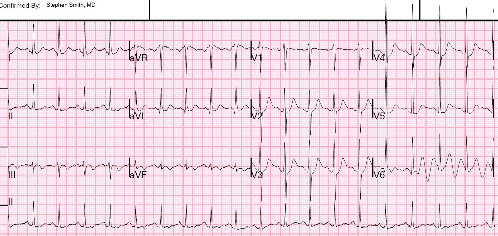
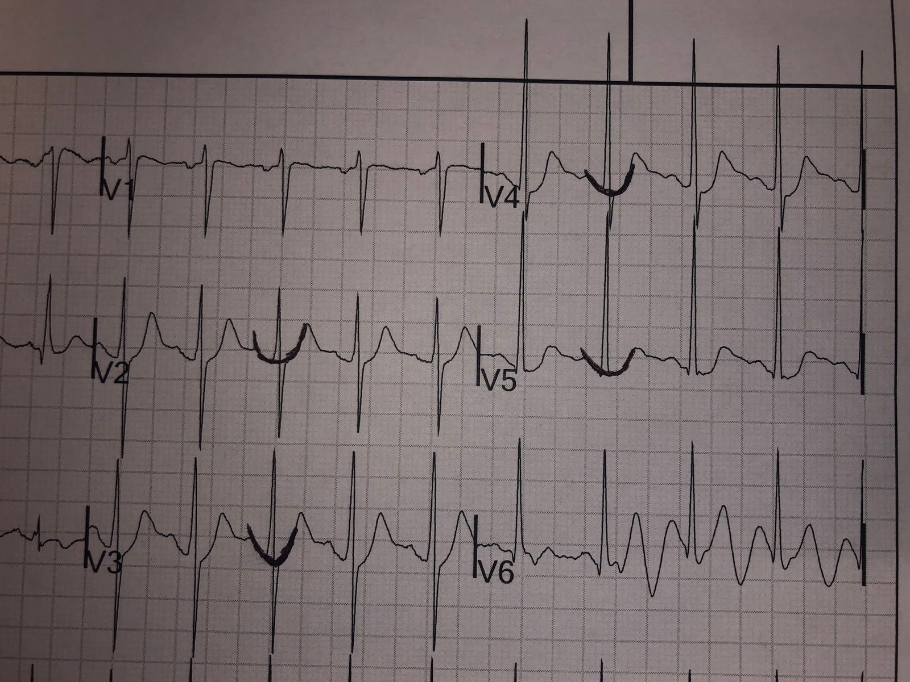
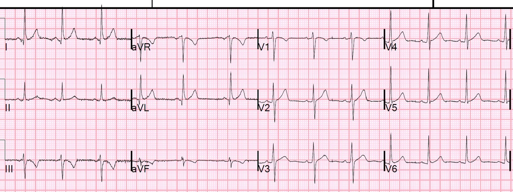
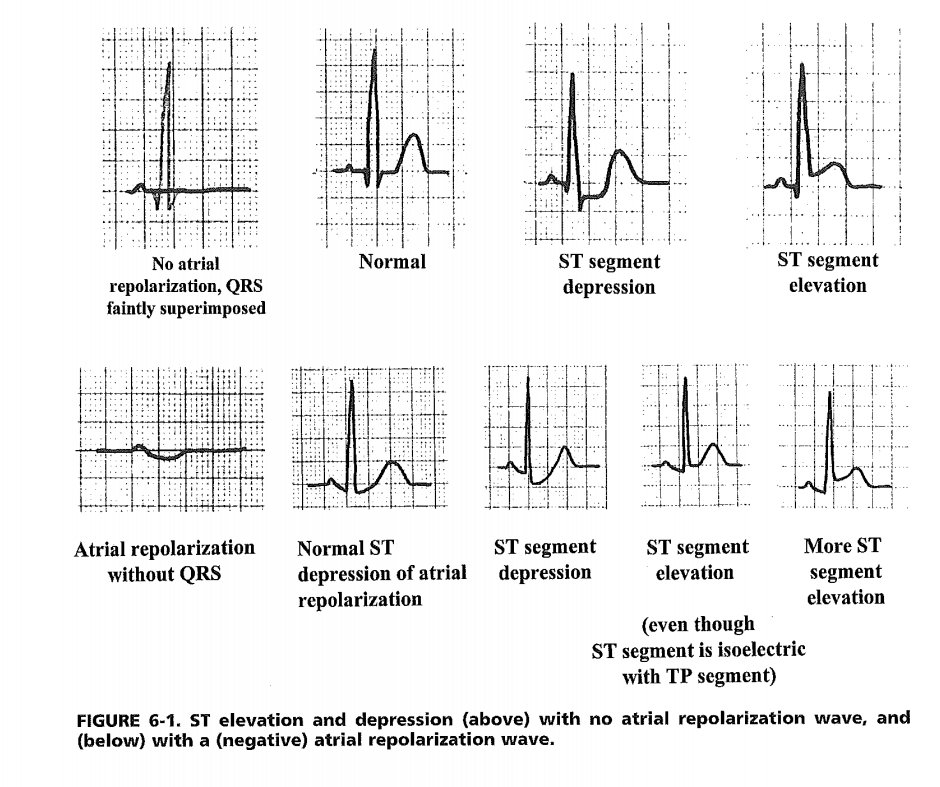
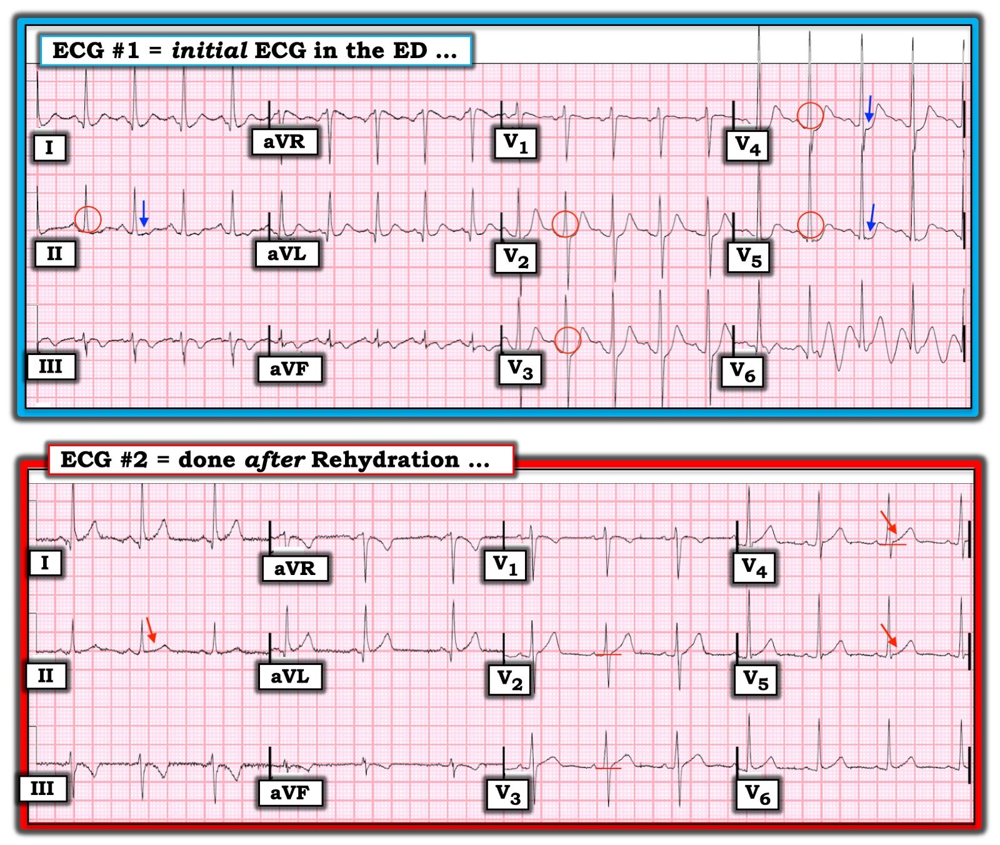

02/10/2019 — Hãy nhìn đoạn ST chênh xuống này
Bản dịch tiếng Việt của bài "Look at this ST Depression" – Dr. Smith’s ECG Blog. Giữ nguyên toàn bộ 7 hình ảnh và 1 video của bản gốc.
Một người khỏe mạnh 30 mấy tuổi đến khám vì cảm giác nặng ngực 2 ngày. Anh có một số yếu tố nguy cơ thuyên tắc phổi, nhưng không có yếu tố nguy cơ nào của hội chứng vành cấp (ACS).
Không có khó thở.
Anh có một vài lý do để bị mất nước.
Hôm đó anh đã chạy bộ và không có triệu chứng gì trong lúc chạy.
Trông anh rất khỏe.
Đây là điện tâm đồ ban đầu của anh:


Diễn giải:
Nhịp nhanh xoang với hình ảnh có vẻ là ST chênh xuống, đặc biệt ở V2-V5, và ST chênh lên ở aVR.
Nhưng nếu nhìn kỹ hơn, bạn sẽ thấy đoạn PR chênh xuống rất sâu (và chênh lên ở aVR). Đây là một sóng tái cực nhĩ sâu, và nó có thể giả ST chênh xuống. Phần sâu nhất của sóng này thường nằm ngay sau điểm J.
Ở đây tôi vẽ viền sóng tái cực nhĩ bằng cây bút thô sơ của mình:


Ban đầu các nhân viên y tế rất nghi ngờ thiếu máu cục bộ, cho đến khi tôi chỉ ra điều này.
Chúng tôi siêu âm tim tại giường, kết quả xác nhận thất phải nhỏ và thất trái tăng động:
Tần số tim của bệnh nhân giảm xuống sau khi chúng tôi cho anh nằm ngửa trên cáng. Anh bị hạ huyết áp tư thế đứng (orthostatic). Anh được truyền dịch tĩnh mạch và tần số tim giảm xuống.
D-dimer và 2 lần troponin đều dưới ngưỡng phát hiện. Hemoglobin bình thường và không có bằng chứng chảy máu.
Đây là điện tâm đồ sau bù dịch:


Sóng tái cực nhĩ đã biến mất. Bạn có thể nghĩ có sóng T đảo ngược ở chuyển đạo III và aVF.
Nhưng sóng T âm không có nghĩa là có sóng T đảo ngược.
Trục sóng T, do máy tính đo, là -12 độ.
Trục QRS là 6 độ.
Vì vậy góc QRST chỉ 18 độ, và mọi giá trị dưới 45 đều bình thường.
Sau truyền dịch anh hết triệu chứng và được cho xuất viện.
Bàn luận
Sóng tái cực nhĩ được nhận biết nhờ đoạn PR dốc xuống, và là nguyên nhân thường gặp gây nghiệm pháp gắng sức dương tính giả. Nhịp nhanh làm chúng rõ hơn.
Xem bài báo này:
Sapin PM và cs. Identification of false positive exercise tests with use of electrocardiographic criteria: a possible role for atrial repolarization waves. JACC 18(1):127-35; tháng Bảy năm 1991. (link là bản toàn văn)
Link tới bản tóm tắt: http://www.onlinejacc.org/content/18/1/127.abstract
Đây là một sơ đồ trong cuốn sách của tôi, The ECG in Acute MI (đây là link tới bản pdf miễn phí)


Những điểm cần học:
1. Hãy nhận biết sóng tái cực nhĩ. Nó có thể giả ST chênh xuống.
2. Một bệnh nhân đau ngực mà đi chạy bộ trong lúc đang có triệu chứng và cảm thấy khỏe trong lúc chạy thì ít có khả năng bị ACS hoặc thuyên tắc phổi.
3. Hãy xem góc QRST
4. Vấn đề sóng tái cực nhĩ là một trong những lý do khiến các hướng dẫn khuyên đo ST chênh lên tại điểm J, so với điểm nối PQ, KHÔNG phải so với đoạn TP.
Thực ra, không có cách đo đoạn ST nào đã được thẩm định mà vừa nhạy vừa đặc hiệu cao đối với nhồi máu cơ tim do tắc (Occlusion Myocardial Infarction).
Xem thêm về sóng tái cực nhĩ tại đây.

===================================
BÌNH LUẬN CỦA TÔI, bởi KEN GRAUER, MD (2/10/2019):
===================================
Tôi thích bài này vì nhiều lý do. Dr. Smith nhấn mạnh một điểm quan trọng (và thường bị bỏ qua) về việc sóng tái cực nhĩ có thể gợi ý mức ST chênh xuống nhiều hơn thực tế. Ca này cũng là một cơ hội tuyệt vời để bàn về thuật ngữ, và về những gì có và không có khả năng là thay đổi sóng ST-T do thiếu máu cục bộ.
- Dù diễn giải “cốt lõi” của tôi gần như giống hệt của Dr. Smith — tôi sẽ đưa ra một cách tiếp cận khác về cách tôi đã độc lập đi đến cùng kết luận đó.
- Để cho rõ — tôi đã đánh nhãn và đặt 2 điện tâm đồ của ca này trong Hình 1.


SUY NGHĨ CỦA TÔI: Theo ý kiến của tôi — có ST chênh xuống trên điện tâm đồ ban đầu ghi lúc bệnh nhân đến khoa cấp cứu (ED) ( = điện tâm đồ #1 trong Hình 1).
- Bệnh sử trong ca này là một người đàn ông 30 mấy tuổi có “cảm giác nặng ngực” khoảng ~2 ngày — nhưng dường như không đau ngực vào lúc ghi điện tâm đồ #1. Thay vào đó, trên lâm sàng nghi ngờ mất nước. NGHĨA LÀ: Với tôi, bệnh sử này gợi ý khả năng thấp bị thiếu máu cục bộ cấp.
- Điện tâm đồ #1 cho thấy rõ nhịp nhanh xoang tần số ~115/phút. Dù có nhiều nhiễu ở chuyển đạo V6 — nhiễu là rất ít ở phần còn lại của bản ghi. Các khoảng và trục bình thường. Tăng tiến sóng R bình thường, vùng chuyển tiếp nằm giữa chuyển đạo V3 và V4. Biên độ sóng R khá lớn ở các chuyển đạo ngực bên — nhưng vì bệnh nhân là người trưởng thành trẻ tuổi — điều này không nhất thiết là bất thường.
- Như Dr. Smith đã nêu — sóng tái cực nhĩ nổi bật rõ ràng gợi ý mức chênh xuống sóng ST-T nhiều hơn thực tế. Dù vậy — các vòng tròn ĐỎ mà tôi đã cẩn thận vẽ ở một số chuyển đạo trong Hình 1 cho thấy rõ có một mức điểm J chênh xuống (ít nhất ở các chuyển đạo V3, V4 và V5). Rõ ràng, mức độ điểm J chênh xuống ở các chuyển đạo này (phần kéo dài xuống dưới bờ dưới của các vòng tròn ĐỎ tròn hoàn hảo) là rất ít — NHƯNG — điều này phải được xem xét trong bối cảnh điện tâm đồ nền (tức là Điện tâm đồ #2, ghi sau khi bù dịch) của bệnh nhân — trong đó các đường ngang ĐỎ ở chuyển đạo V3, V4 và V5 cho thấy có một mức ST chênh lên nền bình thường ở hầu hết các chuyển đạo ngực.
- Khi đánh giá các thay đổi sóng ST-T — HÌNH DẠNG thường quan trọng hơn mức độ! Các mũi tên XANH trong điện tâm đồ #1 làm nổi bật việc các đoạn ST ngắn ở chuyển đạo II, V4 và V5 bị dẹt tương đối. So sánh HÌNH DẠNG của các đoạn ST này ở chuyển đạo II, V4 và V5 trên điện tâm đồ #1 — với các đoạn ST ở cùng các chuyển đạo đó trên điện tâm đồ #2 sau bù dịch (mũi tên ĐỎ trên điện tâm đồ #2), cho thấy sự phục hồi của độ dốc lên từ từ, chậm rãi bình thường của đoạn ST ở các chuyển đạo này.
- Cuối cùng — có đoạn ST dạng vòm (coving) kèm sóng T đảo ngược sâu vừa phải (khi xét đến biên độ QRS), đối xứng ở chuyển đạo III và aVF — đi kèm với đoạn ST dẹt đã nêu ở trên ở chuyển đạo II. LƯU Ý: Vào lúc diễn giải điện tâm đồ ban đầu này, tôi không thể nói chắc chắn các thay đổi sóng ST-T ở chuyển đạo III và aVF là “bình thường đối với bệnh nhân này” — hay có thể do thiếu máu cục bộ …
- ĐIỀU CỐT LÕI: Có thay đổi sóng ST-T trên điện tâm đồ ban đầu tại khoa cấp cứu ( = điện tâm đồ #1) vào lúc bệnh nhân đến khám với nhịp nhanh xoang + mất nước trên lâm sàng. Ngoại trừ sóng T đảo ngược ở chuyển đạo III và aVF — các thay đổi sóng ST-T nêu trên đã hồi phục trên điện tâm đồ #2 sau khi bù dịch và tần số tim chậm lại.
ĐIỂM MẤU CHỐT: Cách tiếp cận hệ thống mà tôi ưa dùng để diễn giải mỗi và mọi điện tâm đồ bạn gặp chia quá trình này thành 2 Bước riêng biệt: i) BƯỚC #1 — Phân tích mô tả = trong đó bạn chỉ mô tả các dấu hiệu bạn thấy trên bản ghi mà không đưa ra bất kỳ diễn giải nào! — và, ii) BƯỚC #2 — Nhận định lâm sàng = trong đó bạn diễn giải các dấu hiệu điện tâm đồ đã ghi nhận ở Bước #1 trong bối cảnh tình huống lâm sàng. (BẤM VÀO ĐÂY — nếu bạn quan tâm đến Chi tiết về Cách tiếp cận hệ thống để đọc điện tâm đồ của tôi).
- Với điện tâm đồ #1 — Phân tích mô tả cho thấy có đoạn ST dẹt và chênh xuống nhẹ ở một số chuyển đạo. Ngoài ra — có ST dạng vòm và sóng T đảo ngược ở chuyển đạo III và aVF. Thuật ngữ cụ thể tôi dùng để mô tả các dấu hiệu điện tâm đồ này là bất thường sóng ST–T không đặc hiệu (tức là “không đặc hiệu” vì vào thời điểm này chúng chưa có giá trị chẩn đoán bệnh mạch vành cấp).
- Nhận định lâm sàng của tôi đối với điện tâm đồ #1, dựa trên Bệnh sử (tức là, một người đàn ông 30 mấy tuổi trước đó có cảm giác nặng ngực, nhưng hiện không đau ngực và có mất nước trên lâm sàng) — là bệnh mạch vành cấp ít có khả năng.
ĐIỂM THEN CHỐT (PEARL): Dấu hiệu chính trên điện tâm đồ #1 là sự hiện diện của bất thường sóng ST–T không đặc hiệu ở một số chuyển đạo. Thực ra có hơn 50 nguyên nhân gây thay đổi sóng ST-T trên điện tâm đồ — nhiều nguyên nhân trong số đó không liên quan đến tim. Về mặt thực hành — tôi khuyên nên ghi nhớ DANH SÁCH 6 Nguyên nhân Thường gặp gây Thay đổi Sóng ST–T sau đây, vì đây là những nguyên nhân bạn sẽ gặp thường xuyên nhất. Ghi nhớ DANH SÁCH này sẽ giúp đơn giản hóa việc thu hẹp các nguyên nhân có khả năng nhất của những bất thường sóng ST-T mà bạn đã phát hiện trên bệnh nhân của mình (BẤM VÀO ĐÂY — để xem bàn luận chi tiết hơn về chủ đề này).
- — 1) Thiếu máu cục bộ (như trong bệnh mạch vành cấp).
- — 2) “Tăng gánh” thất trái (LV “Strain”) (tức là các thay đổi tái cực đi kèm LVH).
- — 3) Tác dụng của digitalis.
- — 4) Hạ kali máu/Hạ magnesi máu.
- — 5) Các thay đổi liên quan tần số (tức là nhịp nhanh!).
- — 6) Bất kỳ sự kết hợp nào của các nguyên nhân trên!
Về ca này: Chúng ta được biết bệnh nhân này mất nước trên lâm sàng — nhưng kết quả điện giải đồ huyết thanh không được đề cập.
- Vì người đàn ông 30 mấy tuổi này dường như không có tiền sử bệnh lý gì trước đó — LVH và việc dùng digitalis là ít có khả năng.
- Triệu chứng của anh gợi ý khả năng thấp bị bệnh mạch vành cấp.
- Xét DANH SÁCH 6 Nguyên nhân ở trên — chỉ còn lại khả năng bất thường điện giải (đang chờ kết quả xét nghiệm) — và/hoặc nhịp nhanh là những nguyên nhân có thể gây ra các thay đổi sóng ST-T nêu trên.
Điện tâm đồ theo dõi: Như đã nêu ở trên — sóng ST-T dẹt và ST chênh xuống nhẹ đã hồi phục trên Điện tâm đồ #2. Tần số tim giờ đã giảm xuống mức bình thường hơn là 80-85/phút. Có lẽ — mọi bất thường điện giải có thể đã có đều đã được điều chỉnh nhờ bù dịch. Như vậy, có những lý do giải thích tại sao các thay đổi sóng ST-T không đặc hiệu đã trở về bình thường.
- Đoạn ST dạng vòm kèm sóng T đảo ngược đối xứng sâu vừa phải vẫn tồn tại ở chuyển đạo III và aVF trên bản ghi sau bù dịch. Dù vậy — Thấy sóng T đảo ngược ở chuyển đạo III và/hoặc aVF không nhất thiết là bất thường, đặc biệt khi phức bộ QRS ở các chuyển đạo này chủ yếu âm (như trên điện tâm đồ #2) — và — đặc biệt khi sóng ST-T ở chuyển đạo dưới thứ 3 ( = chuyển đạo II ) giờ trông hoàn toàn bình thường. Do đó, với khả năng thấp bị bệnh mạch vành ở người nam 30 mấy tuổi này, người có điện tâm đồ sau bù dịch ngoài ra hoàn toàn bình thường — Nhận định lâm sàng của tôi về sóng T đảo ngược thấy ở chuyển đạo III và aVF trên điện tâm đồ #2 là điều này bình thường đối với bệnh nhân này.
- BẤM VÀO ĐÂY — nếu bạn quan tâm đến “Quan điểm của tôi” về một Cách tiếp cận Dễ dùng để ghi nhớ những chuyển đạo nào trên điện tâm đồ người lớn có thể bình thường có cả sóng Q lớn và/hoặc sóng T đảo ngược đáng kể.
Chúng tôi xin CẢM ƠN Dr. Smith đã trình bày ca này!